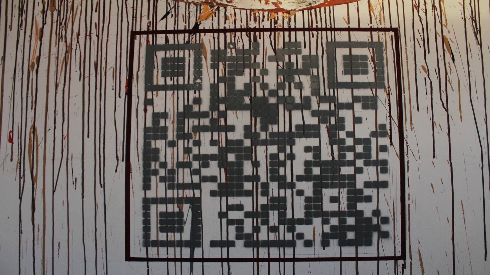

La mission è di creare del valore aggiuntivo per la tua attività/ ambiente e per le persone che godranno dell impatto dell'opera, grazie all'unificazione tra il processo pittorico e il processo interattivo digitale.
Catalisi astratta si colloca nel mezzo fra la pittura gestuale-astratta e il figurativo.
Catalisi proviene dal verbo greco καταλύειν, esso indica rottura-scioglimento.
La mission è di creare del valore aggiuntivo per la tua attività/ ambiente e per le persone che godranno dell impatto dell'opera, grazie all'unificazione tra il processo pittorico e il processo interattivo digitale.
Per poter leggere il QR Code associato all' opera pittorica, è necessario possedere un telefono o uno smartphone in grado di riconoscere la matrice di cui è composto il codice e rimandare all’utente le informazioni.
Se il dispositivo non è dotato di un lettore QR Code di sistema, è possibile leggerlo grazie alla fotocamera dello smartphone servendosi di un’applicazione scaricabile dal Play Store o dall’App Store.
Commissionando un opera pittorica collegata al progetto Catalisi astratta, si avrà la possibilità di associarsi ad una bellissima proposta culturale e sociale, in un'ottica di CSR e di supporto verso la cultura contemporanea.
Catalisi astratta si colloca nella prima linea d'avanguardia verso il crescente sviluppo tecnologico, puntando sulla cultura artistica in connubio con il progresso digitale- tecnologico che stiamo vivendo.
Vi è la possibilità di associare il codice qr collocato vicino all'opera pittorica, alla propria idea di marketing. Può essere un sito web, un catalogo prodotti, una vendita, un inserzione all'interno dei social ecc.
Commissionando un opera da collocare in uno spazio pubblicitario, avrai un incremento di visiblità per la tua attività, e beneficerai di tutto ciò che questo comporta:
L'ambiente assume un estetica di valore, un contesto di apertura verso l'arte ma sopratutto di rinnovamento, con la conseguente crescita di partecipazione da parte della clientela.
Trascorrere del tempo in un ambiente nel quale l'arte è parte degli interni in modo organico, porta benessere, ascolto ed apertura comunicativa
Il tempo di realizzazzione di un opera è variabile , comincia ed dipende dalla progettazzione. Essa comprende la scelta del concetto, della dimensione, della superficie murale ( o superficie di supporto: tele, pannelli ecc) e dalla tecnica applicata. La tecnica proposta si basa sull' utilizzo di pennelli, spatole, pittura acrilica, ed gesso scagliola.
Il tempo di realizzazzione di un opera è variabile , comincia ed dipende dalla progettazzione. Essa comprende la scelta del concetto, della dimensione, della superficie murale ( o superficie di supporto: tele, pannelli ecc) e dalla tecnica applicata.
Interessante è l'opzione data della vernice "Air lite" per la stesura dell'opera.
Una pittura speciale in grado di assorbire gli agenti inquinanti purificando l’aria che respiriamo. I benefici di questa pittura sono l'eliminazione del 99% di batteri presenti nell'aria, di impedire allo sporco di depositarsi sulle pareti, riduce i consumi energetici impedendo il passaggio eccessivo di calore.
Lo spazio adiacente all' opera durante la stesura, viene protetto attraverso una mascheratura, al suolo viene posto un telo protettivo.
Un limite personale circoscritto all' interno della figura geometrica del rombo, varca la soglia dell'infinito.
La dinamicità del gesto, attraverso un azione di riflessione sulla velocità di pensiero, porta ad un'unione, un flusso forse, di coscienza.
La degradazione della materia, circoscritta in un cerchio.
"Perdere la capacità di stare da soli con sé stessi, farsi trasportare dalla gente, lasciare che la propria singolarità si arrenda alla conformità che intorpidisce le menti."
Ha cominciato ad appassionarsi alla pittura in giovane età, sperimentando vari mezzi e strumenti.
Durante il corso delle sperimentazioni in età adolescenziale, ha conseguito il diploma di maturità in meccanica industriale . Terminato il diploma, vi è stato un periodo di sperimentazioni lavorative e di crescita professionale, tra i settori industriale-meccanico e di ristorazione, fra l'italia e la Spagna.
Fà parte dell'associazione culturale "kantiere-misto", con la quale durante gli anni ha partecipato ad eventi artistici-culturali, in qualità di artista ed volontario. Ha partecipato attivamente durante le varie edizioni, al festival internazionale di street art chiamato "Energy fest", interfacciandosi con l'organizzazione del festival e la gestione degli spazi di lavoro.
So di non sapere – Έτσι, δεν γνωρίζω, estì den gnōthizo
Socrate